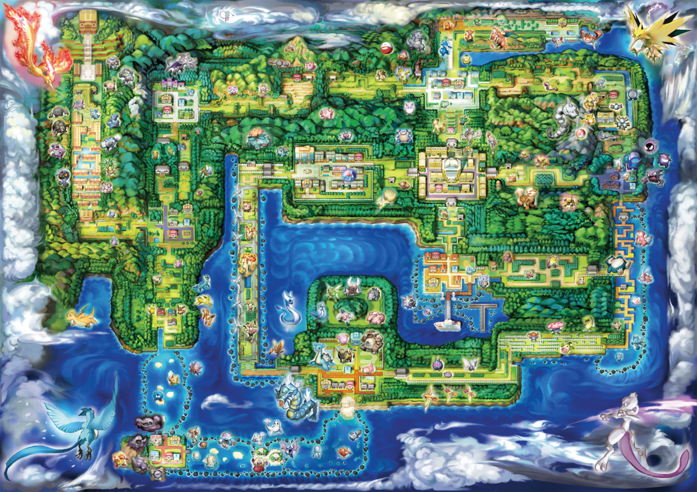
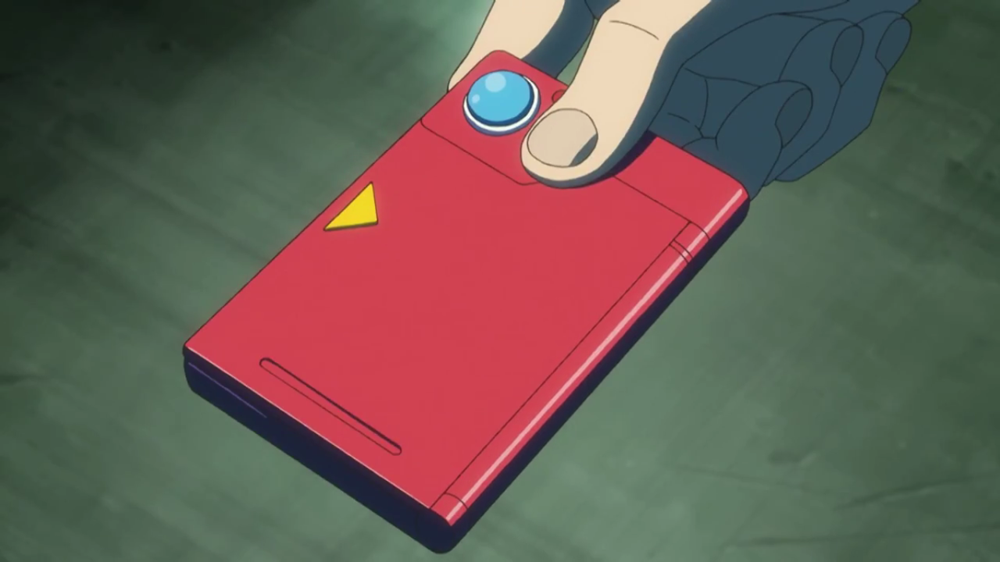
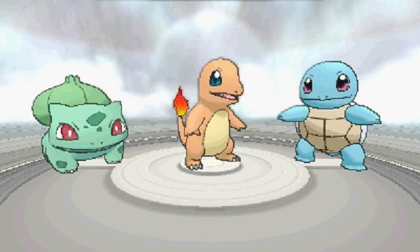
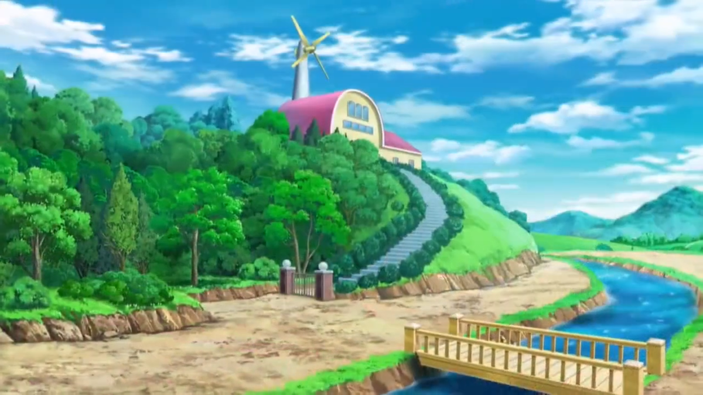
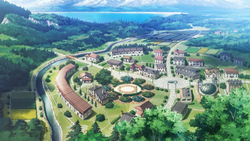
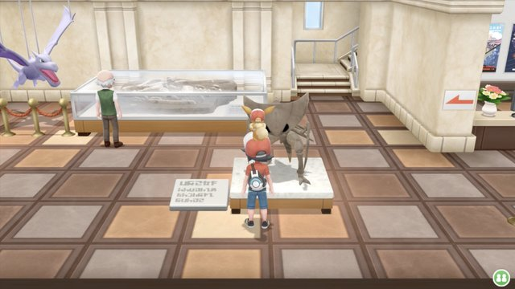
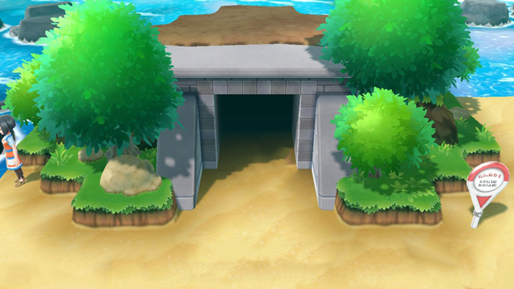
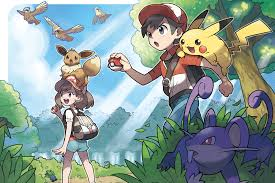

"Hello there! Welcome to the world of Pokémon! My name is Oak! People call me the Pokémon Prof! This world is inhabited by creatures called Pokémon! For some people, Pokémon are pets. Other use them for fights. Myself… I study Pokémon as a profession.
My work is based in the wonderful Kanto Region, Here is a map indicating the landscape of the region.
Here is a sample of an electronic encyclopedia, I have developed for new trainers to explore and help me obtain more information on species of pokemon.
Below is an image of the starting pokemon new trainers can select from as they start their adventures in the Kanto Region.
This is my personal laboratory, where I am the head of the scentist, working with exceptional staff to collaborate and work on countless projects.
This is the city that I currently reside to work on my Research, this is known as Pallet Town.
I often venture to Pewter City Musuem to collaborate with scientists on Fossil Pokemon and other theories regarding the ancient world.
The Seafoam Islands is one of my favorite tourist attractions of the Kanto Region, I frequently travel there to research the pokemon that live in this mysterious place.
I am a mentor and coach to those starting trainers and frequently follow up with them in their journeys across the Kanto Region.
